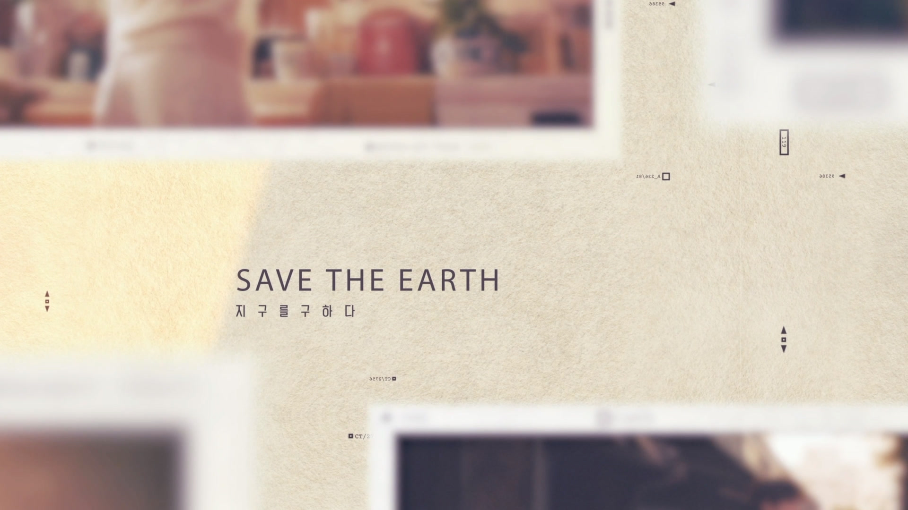
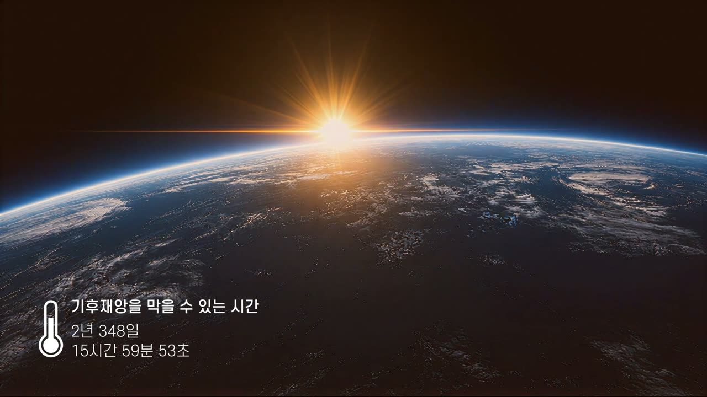
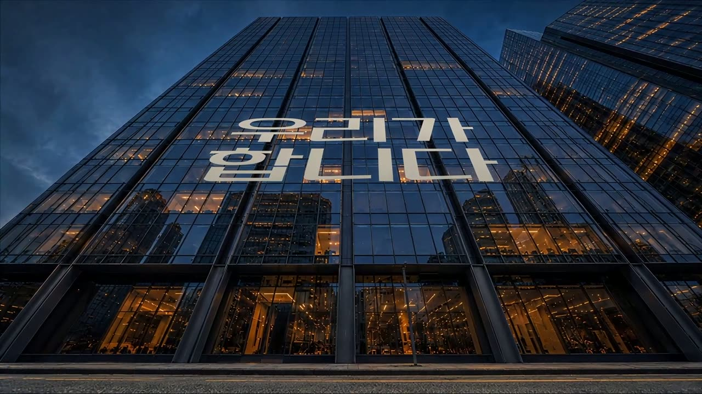
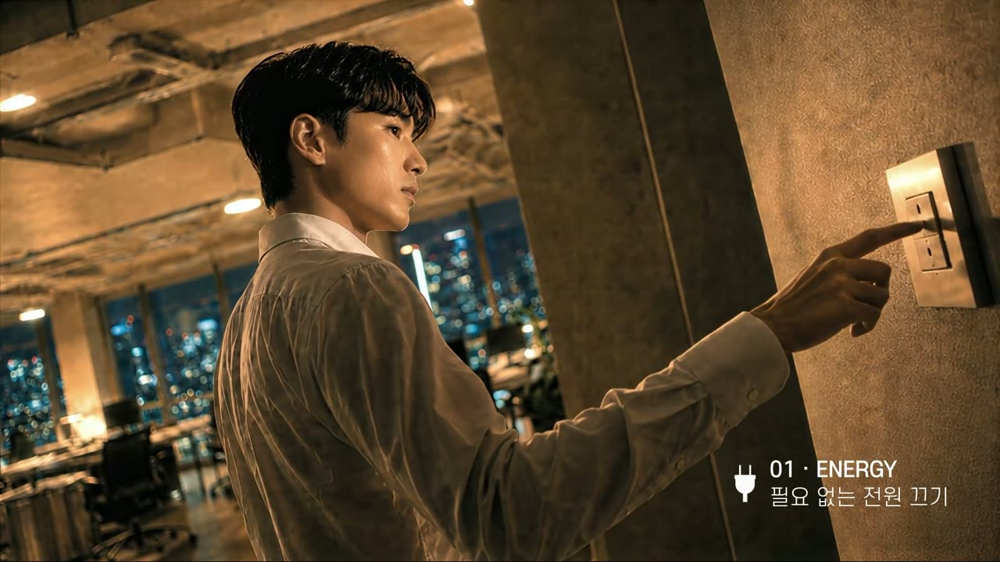
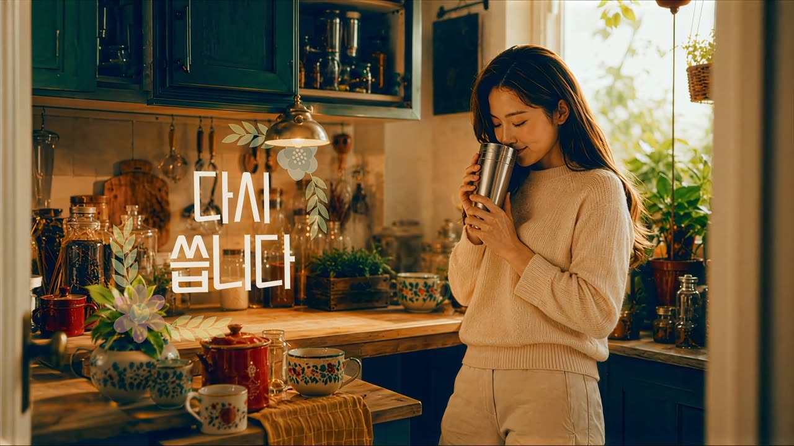
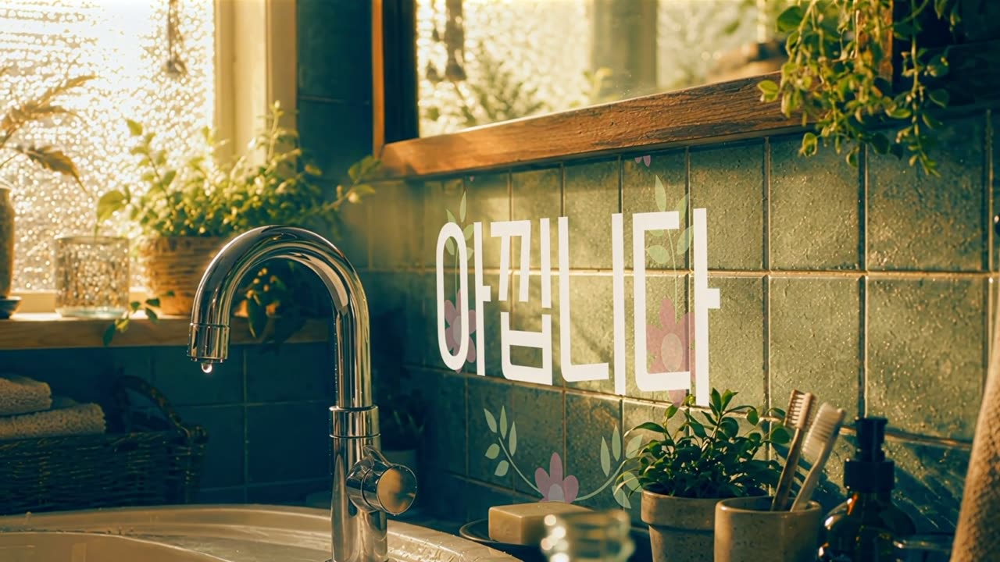
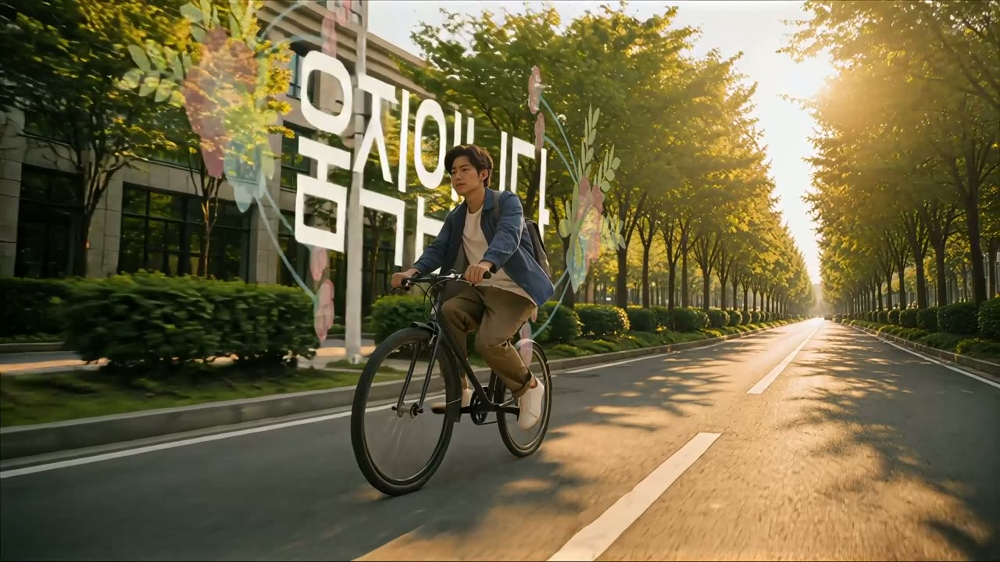
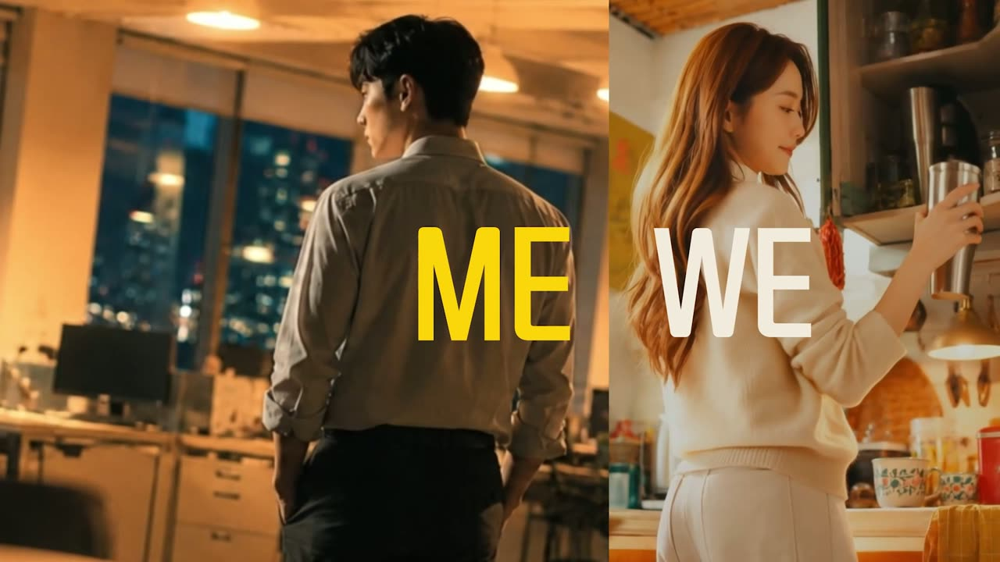
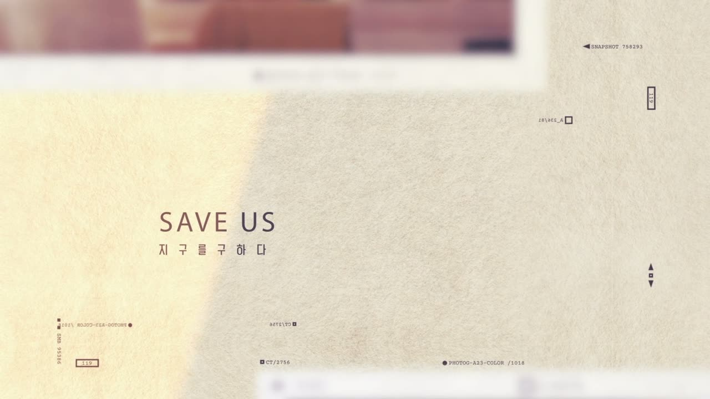
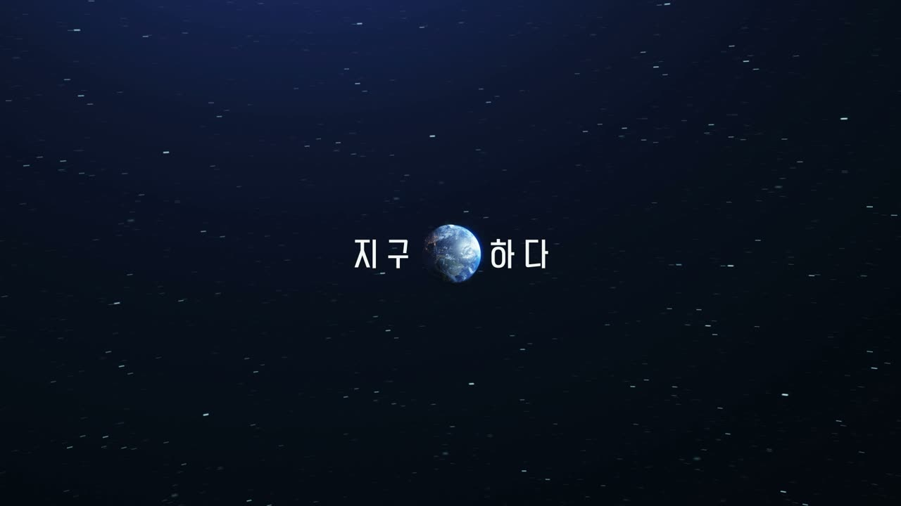

지구를 구하다
SAVE THE EARTH

LOGLINE
지구는 바라보는 명사가 아니라, 해야 하는 동사다. 그리고 그 동사의 주어는 처음부터 '우리'였다.
BRIEF — 과제와 기획 배경
「지구를 구하다」에서 두 글자를 덜어내면
「지구하다」
공모전이 제시한 제목은 「지구하다」 — 지구라는 명사를 동사로 쓴 조어였다. 기획은 이 낯선 동사를 풀어내는 데서 출발했다.
출발점으로 삼은 사실은 하나다. 기온 상승에는 돌이킬 수 없는 한계점이 있고, 그 한계점까지 남은 시간은 카운트다운이 가능할 만큼 구체적이다. 죽어가는 지구를 구하려면 행동이 필요하고, 그 행동의 주체는 정부나 기업 같은 3인칭이 아니라 "우리"여야 한다.
다만 위기를 외치는 것으로 끝나는 캠페인은 시청자에게 무력감만 남긴다. 그래서 배분을 먼저 정했다 — 위기는 10초 안에 압축해 보여주고, 나머지 65초는 전부 해법에 쓴다. 누구나 삶에서 할 수 있고 해야 하는 작은 행동들. 그리고 그 작은 행동이 '나'에서 '우리'가 될 때 얼마나 큰 힘이 되는지를 후반부가 증명하도록 설계했다.
CONCEPT — "우리는 합니다"
명령형(하세요)도 청유형(합시다)도 아닌 현재형 선언. 시청자를 아직 행동하지 않은 사람으로 규정하지 않고, 이미 행동하고 있는 '우리'의 일원으로 초대한다. 이 어조가 카피 전체를 관통한다.
우리는 합니다.
끕니다. 다시 씁니다. 아낍니다. 움직입니다.
우리가 하는 일이 지구를 구합니다. 오늘도.
지구를 구하다. 지구하다.
네 개의 동사는 4대 생활 실천에 대응한다 — 에너지 절약(ENERGY), 일회용품 줄이기(REUSE), 물 절약(WATER), 친환경 이동(MOVE). 특별한 장비도 비용도 결심도 필요 없는, 오늘 바로 되풀이할 수 있는 행동만 골랐다.
STRUCTURE — 75초의 여덟 단락
- 프롤로그 · 0:00–0:10위기 제시. 우주에서 도시로 하강하는 동안 기후시계가 카운트다운된다.
- 선언 · 0:10–0:12태도 전환. 빌딩 유리면에 "우리가 합니다"가 새겨진다.
- ① ENERGY · 0:12–0:22끕니다 — 밤의 사무실, 퇴근길 소등.
- ② REUSE · 0:22–0:31다시 씁니다 — 낮의 부엌, 텀블러.
- ③ WATER · 0:31–0:45아낍니다 — 아침의 욕실, 수도꼭지 잠금.
- ④ MOVE · 0:45–0:56움직입니다 — 오후의 거리, 자전거.
- 브리지 · 0:56–1:04확산. 나→우리, ME→WE의 분할화면 몽타주.
- 엔딩 · 1:04–1:15반전과 결론. SAVE THE EARTH → SAVE US → 지구하다.
네 행동에는 각기 다른 인물·장소·시간대를 배정했다 — 밤 사무실의 남성, 낮 부엌의 여성, 아침 욕실의 여성, 오후 거리의 남성. 성별·공간·시간을 고르게 분산해 "누구의, 어느 시간의 하루를 잘라도 기후행동이 있다"는 메시지를 캐스팅 구조 자체에 심었다.
SCENES — 씬별 연출

스케일의 압축
우주에서 본 지구의 일출에서 시작해, 컷 없이 도시 상공 → 빌딩 협곡 → 보도블록 높이까지 하강한다. 행성 단위의 문제를 한 사람의 눈높이까지 끌어내리는 10초.
화면 좌하단에는 "기후재앙을 막을 수 있는 시간 — 2년 348일 15시간 59분 53초"가 실제 초 단위로 줄어드는 기후시계를 합성했다. 그리고 이 시계는 본편 진입과 동시에 화면에서 제거된다. 공포로 열되 공포에 머물지 않는다 — 시계가 있던 자리를 행동이 이어받는 구조다. 하강이 끝난 텅 빈 도심에 꽃과 잎의 모션그래픽이 피어나며 타이틀이 뜬다.

도시의 표면에 새긴 문장
박명의 초고층 빌딩 유리면에 "우리가 합니다"를 3D 트래킹으로 합성했다. 자막이 아니라 도시에 새겨진 문장으로 보이게 한 것으로, 이후 모든 타이포그래피의 규칙 — 글자는 화면 위가 아니라 공간 안에 존재한다 — 이 여기서 시작된다.
행동 ① ENERGY — 끕니다

빛으로 쓴 서사
야근을 마친 남성이 사무실을 나서며 스위치를 끈다. 4컷 구성 — 켜진 사무실을 걷는 뒷모습(로우앵글) → 스위치에 닿는 손(측면) → 어깨 너머 프로필(망원, 역광 림라이트) → 불 꺼진 사무실과 출구의 실루엣(광각).
챕터의 실제 주인공은 조명이다. 켜짐에서 꺼짐까지 화면의 밝기 곡선이 곧 이야기이며, 소등 컷에서는 음악도 5초간 함께 가라앉도록 사운드를 설계했다. 절약을 상실이 아니라 고요로 경험하게 하는 장치다.
행동 ② REUSE — 다시 씁니다

소품의 설득
낮의 부엌에서 여성이 찬장의 텀블러를 꺼내 커피를 담아 마신다. 3컷 — 꺼내는 손 → 따르는 클로즈업 → 마시는 얼굴(역광).
이 챕터의 설득은 대사가 아니라 미술이 한다. 새 물건이 하나도 등장하지 않는 부엌 — 손때 묻은 주전자, 유리병의 곡물, 화분의 허브 사이에서 다시 쓰는 일이 궁핍이 아니라 취향으로 보이도록, 네 챕터 중 가장 따뜻한 톤으로 조율했다.
행동 ③ WATER — 아낍니다

흐름에서 방울로
아침 욕실. 양치하는 동안 흐르던 물을 손이 잠근다. 6컷으로 가장 길게 쓴 챕터로, 완전 부감(세면대의 물줄기) → 문틀 프레이밍 → 거울 투샷 → 잠그는 손 인서트 → 물 멈춘 뒤의 거울 → 수도꼭지 끝 물방울 한 개로 수렴한다.
챕터 전체가 '흐름 → 정지'의 감쇄 구조이며, 마지막 컷에서는 역광에 맺힌 물방울 하나가 화면의 유일한 하이라이트가 되도록 노출을 설계했다. 아껴진 물 전체를 한 방울이 대표한다.
행동 ④ MOVE — 움직입니다

카메라도 움직인다
오후의 거리. 자전거 자물쇠를 푸는 손 → 끌고 나오는 전신(전경에 가로수를 건 광각) → 페달 밟는 발(보도블록 밀착 초저각) → 가로수길 원경(망원 압축) → 도로 위 측면 트래킹. 다섯 컷의 렌즈·높이·축이 전부 다르다.
'움직이자'는 챕터에서 카메라부터 움직이게 한 것으로, 영상 전체에서 속도감이 가장 높은 구간을 마지막 행동에 배치해 브리지의 몽타주로 자연스럽게 가속되도록 했다.
브리지 · 엔딩

편집이 메시지를 수행한다
화면이 세로로 분할되며 앞서 등장한 네 사람이 재등장한다. 나/우리, ME/WE의 타이포와 함께 2분할이 3분할로 증식하고, 컷 길이는 0.5초에서 0.04초까지 몰아친다.
"나의 작은 실천이 모여 우리의 실천이 될 때 지구를 살리는 내일을 만든다"는 핵심 메시지를 내레이션이 아니라 편집 형식으로 말하는 구간이다. 화면 속 사람 수가 늘어나는 것 자체가 확산의 시각화다.

글자에만 집중시키는 반전
마지막 11초는 화면의 정보를 글자 하나로 좁힌다. 브리지가 끝나면 네 사람의 순간을 담은 사진 4장이 나무 탁자 위로 차례로 떨어져 쌓인다 — 분할화면으로 스치던 실천들이 기록으로 남는 연출이다. 사진 더미 위로 "하나의 작은 실천이 모여, 우리의 내일을 바꿉니다"가 지나간다.
그리고 종이 질감 화면에서, 영상 내내 반복된 구호가 스스로를 고쳐 쓴다. SAVE THE EARTH의 철자가 지워지고 — SAVE U — SAVE US. '세이브 어스'라는 같은 발음 안에서 지구(EARTH)가 우리(US)로 바뀌는 순간, 지구를 살리는 일이 곧 우리가 사는 길이라는 결론이 반전의 충격과 함께 전달된다.

명사가 동사가 되는 순간
검은 우주에서 "지구를 구하다"의 '를 구' 자리에 작고 푸른 지구가 들어와 앉는다 — 지구●하다. 영어의 반전(EARTH→US)을 한글의 반전(지구를 구하다→지구하다)이 받아 완성하며, 흰 화면의 "지구하다" 네 글자로 끝난다. 과제로 받은 제목이 영상의 결론이 되도록 역산해 설계한 엔딩이다.
TYPOGRAPHY — 두 번째 출연자
이 영상에서 타이포는 자막이 아니라 출연자다. 전 타이틀을 After Effects로 제작했다.
- 기후시계실시간 카운트다운 애니메이션. 프롤로그 전 컷에 유지되다 본편 진입과 함께 제거된다.
- 공간 합성 타이포유리면의 "우리가 합니다"(3D 트래킹), 욕실 타일의 "아낍니다", 부엌 벽의 "다시 씁니다" — 글자가 공간의 원근과 함께 움직인다.
- 챕터 라벨 시스템아이콘(플러그·재활용·수도꼭지·지구) + 번호 + 실천 문구. 컷마다 피사체를 피해 위치를 옮기는 반응형 배치.
- 꽃·잎 모션그래픽콘크리트 도시와 생활 공간에 피어나는 유기적 그래픽으로 타이틀 등장을 연출.
- 엔딩 글자 변환SAVE THE EARTH → SAVE US 타이핑 애니메이션, 그리고 지구●하다 행성 합성.
굵고 큰 타이틀을 애니메이션으로 움직인 것은 짧은 러닝타임 안에서 '보는 맛'과 잔상을 동시에 확보하기 위한 선택이다.
VISUAL — 촬영·조명 원칙
- 카메라 반복 금지같은 초점거리·같은 카메라 높이·같은 축을 두 컷이 공유하지 않는다. 부감·초저각·망원 압축·광각 근접·트래킹을 챕터별로 분산했다.
- 빛이 서사를 만든다①은 켜짐→꺼짐, ③은 흐름→방울. 각 챕터가 자체 감쇄 곡선을 갖는다. 광원은 실전등(데스크램프·펜던트)과 창광 위주의 모티베이티드 라이팅.
- 3층 심도전경 아웃포커스 / 중경 선명 / 배경 보케를 기본 프레임으로, 소품 밀도를 높여 생활감을 확보했다.
- 인물 연출대사 없음. 뒷모습·측면·역광 실루엣 위주, 정면 클로즈업 최소화, 손 인서트는 짧게 — 생성형 AI의 약점(입모양·손·정면 얼굴)이 드러날 상황을 콘티 단계에서 제거했다.
SOUND
BGM의 레벨 곡선은 화면과 동기화해 설계했다. 소등 컷에서 5초간 레벨이 바닥까지 내려가는 정적, 브리지에서 엔딩으로 진입할 때 최고조, 이후 페이드아웃과 블랙으로 종결. 물소리와 생활 소음은 각 챕터의 감쇄 구조(물줄기→방울)를 따라 배치했다.
PIPELINE — 제작
- 키비주얼생성형 AI 이미지로 씬별 키프레임 제작 후, 색보정으로 씬 간 피부톤·블랙레벨을 통일.
- 영상화생성형 AI 비디오 — 키프레임 기반 씬별 클립 생성.
- 합성·모션After Effects — 기후시계, 3D 트래킹 타이포, 챕터 라벨, 꽃·잎 그래픽, 엔딩 글자 변환.
- 편집·사운드Premiere Pro — 컷 편집, BGM·SFX 설계, 최종 마스터링.
제4회 지구하다 페스티벌 AI 영상 공모전 과제 「지구하다」로 제작한 스펙 워크.
CREDITS
- DIRECTED BYAHN JAEKWON
- GENERATIVE AI · EDITAHN JAEKWON
- MOTION GRAPHICSAHN JAEKWON